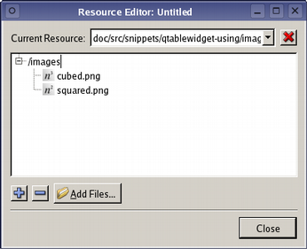

| Home · All Classes · Main Classes · Annotated · Grouped Classes · Functions |
[Previous: Qt Designer's Tab Order Mode] [Contents] [Next: Using Custom Widgets with Qt Designer]

Qt Designer fully supports The Qt Resource System, allowing resources to be specified alongside forms as they are designed. To help designers and developers manage the resources that are needed by applications, Qt Designer's resource editing mode allows resources to be defined on a per-form basis.
Each form has an associated resource editor which can be activated by opening the Edit menu and selecting Edit Resources.
[Previous: Qt Designer's Tab Order Mode] [Contents] [Next: Using Custom Widgets with Qt Designer]
| Copyright © 2005 Trolltech | Trademarks | Qt 4.0.0 |